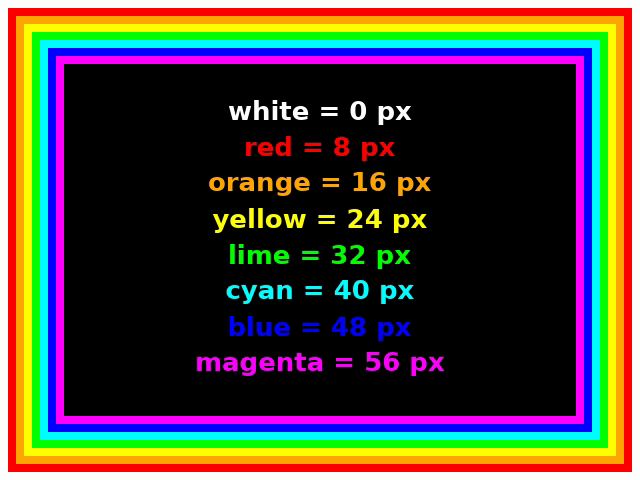
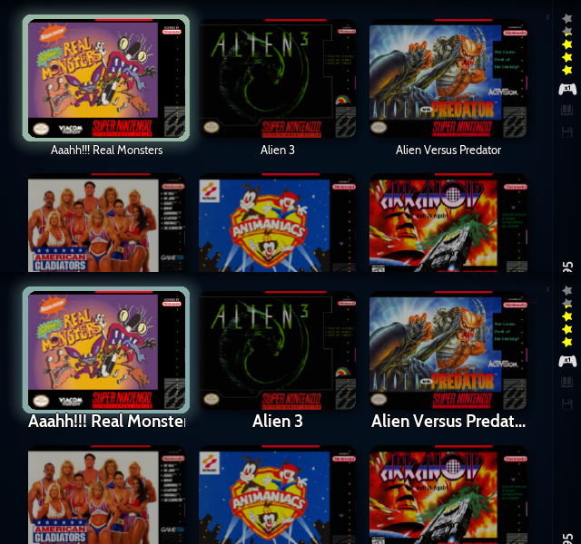
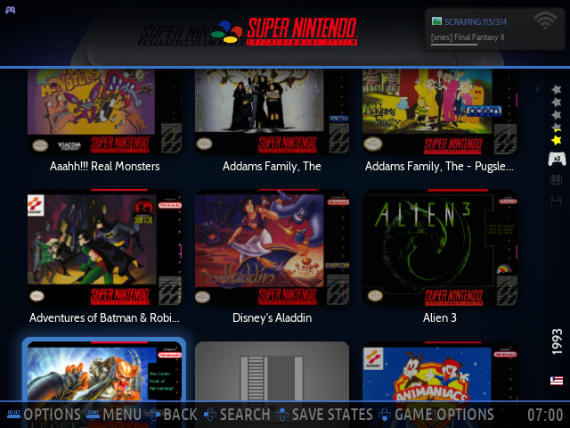
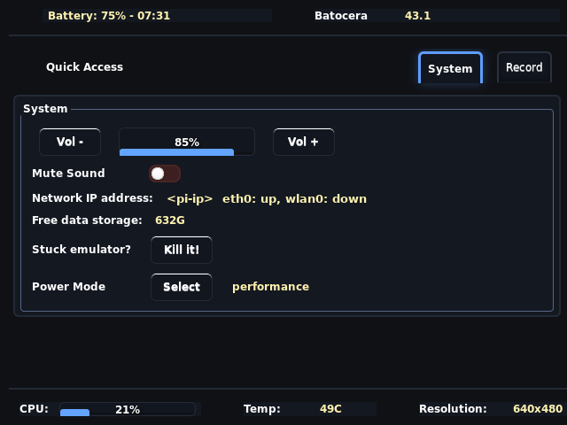

HDMI TV and Sony Trinitron
Two display profiles, switched from the menu with the controller. Each applies a complete set of video, theme, Control Center and Plex settings, then reboots.
Switching
Open Ports and pick one. It applies the profile and reboots in about 30 seconds.
| Ports entry | Use it for |
|---|---|
| Display: HDMI TV (16:9 flat panel) | Any flat TV over HDMI, 4K sets included |
| Display: Sony Trinitron (4:3 CRT) | The Trinitron, through the Dingsun converter |
Both profiles produce a picture on either TV, so picking the wrong one is harmless: select the other entry.
Moving to the Trinitron
On the flat TV, choose Display: Sony Trinitron. The Pi reboots at 640×480.
Shut down (Quit → Shut down, or one press of the case button), then unplug.
Pi HDMI 0 (next to USB-C power) → converter HDMI in. Yellow → Trinitron Video in, white/red → Audio. Power the converter over USB and set it to NTSC.
Turn on the converter and TV first, then the Pi, so it sees the converter at boot.
Going back: choose Display: HDMI TV, shut down, connect HDMI straight to the flat TV.
What each profile sets
| Setting | HDMI TV | Trinitron |
|---|---|---|
Output (es.resolution) | Default: best mode up to 1920×1080 | max-640x480, 60 Hz |
Overscan margins (kernel video=) | None | left 13, right 27, top 0, bottom 20 px |
| Shader set | trinitron-hdmi | trinitron-crt |
| Integer scaling | On | On, except GBA (gba.integerscale=0; 3× doesn't fit 640) |
| Menu theme | Stock es-theme-carbon | es-theme-carbon-crt: bold, white, bigger game titles |
| Control Center | Stock style | Compact style, 12 px bold, bright values |
| Control Center Plane Mode toggle | Removed | Removed |
| Plex (PM4K) quality | Default: original | 480p, 1.5 Mbps |
| Kodi skin | Stock Estuary | Estuary CRT: retro TV guide and big-text show details |
| Smoothing, bezels | Off, off | Off, off |
The converter and why 640×480
- The Trinitron is fed by a Dingsun HDMI-to-composite converter: HDMI in up to 1080p, composite plus stereo RCA out, USB powered, NTSC/PAL switch. It outputs 480i.
- The Pi's own composite port isn't an option: Batocera's CRT guide says it stopped working when Batocera moved to Wayland (around v33), and this Pi runs 43.1.
- 640×480 has square pixels on a 4:3 screen, and 480 lines is exactly 2× a 240-line game, so every game line maps to two output lines. Feeding the converter its native line count also avoids a blurry 1080p-to-480i downscale.
- Kodi needs nothing extra: it runs as a full-screen window (
videoscreen.screenmode=DESKTOP) and follows the output mode. Keep its "Adjust display refresh rate" off; switching to 24 Hz could lose the converter.
480i, not the true 240p a console sends: you get the tube's glow, color and aperture grille, but not the dark gaps between scanlines, and fine detail can shimmer. The converter adds some lag (not measured). The CRT profile uses no scanline or LCD-grid shaders because those patterns would flicker in an interlaced signal.
Overscan
A CRT hides a margin on every edge, and through the converter the picture also sat low and right, which cut off the bottom of the menu. The Pi's HDMI output has hardware margins (DRM properties left/right/top/bottom margin, 0–100 px) that shrink the whole picture inside the frame. Apps still render 640×480, so integer scaling is unaffected. They can only be set at boot, through the kernel command line:
video=HDMI-A-1:640x480@60,margin_left=13,margin_right=27,margin_top=0,margin_bottom=20The profile appends that to /boot/cmdline.txt, from /userdata/system/display-profiles/crt-margins.conf. Ours comes after the firmware's own video=, so it wins. Check after boot with modetest -M vc4 -c | grep -A3 margin.
Measuring with the test pattern
Show overscan-test.png full screen (the display environment variables are needed over SSH):
export XDG_RUNTIME_DIR=/var/run WAYLAND_DISPLAY=wayland-1
mpv --fs --osd-level=0 --image-display-duration=inf /userdata/system/display-profiles/overscan-test.pngThe bands are 8 px apart. Photograph the screen straight on, set the numbers in crt-margins.conf, and run the Trinitron Ports entry again (it reboots). Aim for the white outer band sitting right at the bezel on every edge: no black glass between picture and bezel, and nothing important cut. Two things learned tuning this Trinitron (KV-19TR20):
- A bigger margin pushes the picture away from that edge. If the right edge is cut, raise
rightand lowerleftby the same amount; that moves the picture left without changing its width. When two tries overshoot in opposite directions, split the difference. - Leave a little room at the bottom. The menu's button hints sit near the bottom edge;
bottom=16cut them,bottom=20keeps the white band visible. Top is at 0, the most the Pi can do; any gap left there is the TV's own vertical position (service menu).
Tuning history: 16/24/16/32 (left/right/top/bottom) showed the full frame but left thin black bars top and bottom; 4 and 20 at top/bottom filled them; the sides took three tries (22/18 the wrong way, 10/30 too far, 13/27 centered).
The tube already curves the picture; every real console sent it a flat rectangle. A shader curve would double it and blacken the corners, and pre-warping the image to fit the curve would blur 480i text and needs a different compositor than Batocera's sway. Instead the picture fills the glass and only the outer band or two rounds off at the corners, which games were designed for. Kodi has its own Video calibration screen if its interface ever needs pulling in.

Making the menu readable on a CRT
Over 480i composite, 1-pixel horizontal strokes flicker between the two interlaced fields, and saturated colored text smears. Thicker, brighter text fixes both; size alone doesn't.
Game titles: a theme copy
Carbon's default "Icons" view draws titles with an element called textOfGame in views/icons.xml: 2.2% of screen height (about 10 px at 480) in Cabin Regular. make_crt_theme.sh builds /userdata/themes/es-theme-carbon-crt with those titles at 3.0% in Cabin Bold with a darker outline (and the grid view's titles likewise). The copy is 1.9 MB: the 179 MB of artwork is a link to the stock theme. It's rebuilt on every switch to the Trinitron, so Batocera updates carry over.

- Batocera's
FontScalesetting does not change theme text: screenshots with it at 1.0 and 1.15 were identical. - At 640×480 carbon treats the screen as "tiny" and switches to a layout for the 320×240 GPi Case, with one cover per page. Turned off with
subset.optimizesmallscreens=noines_settings.cfg; it only applies at small resolutions.

Control Center (Hotkey + A)
At 640×480 the Control Center still picks its full-size layout and ran off the right edge. It reads style.css and controlcenter.xml from /userdata/system/configs/controlcenter/ before its own:
make_bcc_compact_css.py(Trinitron only): the stock stylesheet plus its own small-screen rules applied to the full layout, 12 px bold, white labels, light-yellow values, tighter spacing, and a 32 px right margin on the content box so its border stays on screen.make_bcc_layout.py(both profiles): the stock layout without the Plane Mode toggle.

Kodi, live TV and Plex
- Live TV comes from ErsatzTV on a home server through Kodi's IPTV Simple Client. Channels are 640×480 4:3, so on the Trinitron they fill the screen 1:1; on the flat TV they show bars on all four sides, which is expected. The server side and the Kodi add-on setup are on Live TV channels.
- Plex is PM4K. Kodi decodes in software on Batocera (no hardware decoding under Wayland), and the tube shows 480 lines, so the Trinitron profile sets PM4K's
local_quality2,remote_quality2andonline_quality2to index 5 (720×480, 1.5 Mbps) inaddon_data/script.plexmod/settings.xml. The HDMI profile removes them. Kodi rewrites that file when it exits, so the script closes Kodi first. - The converter doesn't pass HDMI-CEC, so a TV remote won't drive Kodi on the Trinitron; the PS5 controller does.
- PM4K's own menus at 640×480 haven't been checked on the tube yet.
The retro TV guide
Both profiles replace Kodi's live-TV screens with the retro guide; make_kodi_skin.sh crt|hdmi builds a copy of Estuary with them and the profile selects it. The HDMI profile's Estuary Retro lays the screens out for 16:9 at 1080p (pi/kodi-skin/hdmi/, 8 channels by 2½ hours) and leaves Estuary's own fonts alone. The Trinitron's Estuary CRT has more to do: stock Estuary lays out a 4:3 screen on a 1920×1440 canvas, so at 640×480 everything is drawn at a third of its size and list text came out 8–10 px tall. Its screens are in pi/kodi-skin/:
- Every font bigger and bold: all 50 of Estuary's fonts become Cabin Bold at 1.5× (display sizes 1.25×, the clock 1.1× so it stays on screen), and Estuary's thin "lighten" style is dropped. List text goes from about 10 to 15 px on the tube, in menus, settings, the channel list and the Plex add-on (which uses the skin's font names).
- TV guide (
MyPVRGuide.xml): a late-90s cable-style grid, navy and yellow, 8 channels by 90 minutes, with the show you're watching in a framed box and the highlighted show's details beside it. The video zooms from full screen into the box. Home → TV opens it instead of the channel list. - Channel banner (
crt-banner.xml, inserted intoDialogSeekBar.xml): when you change channel or press Info while watching, a navy panel with the channel number and name, the show, its time, a yellow progress bar, two lines of description and what's next. Estuary's own live-TV info, the top bar and the time bar step aside while it shows; the on-screen controls still bring up Estuary's. - Show details (
DialogPVRInfo.xml): big bold text and a Watch now button. - Each patch to an Estuary file must match exactly; if a Batocera update changes Estuary, the build stops and the profile falls back to stock Estuary instead of a half-patched skin.
- Coordinates are the 1920×1440 canvas, exactly 3× the real pixels. Fonts are Cabin Bold, the same as the CRT menu titles. Keep lines and gaps at least 2 real pixels; 1-pixel lines flicker on 480i.
- Kodi only enables a hand-installed add-on once it's in its add-on database; the script adds it to the
installedtable inAddons33.db.
| Controller (PS / Xbox) | Watching live TV | In the guide |
|---|---|---|
| Cross / A | Pause | Switch to that channel, full screen |
| Circle / B | Open the guide (show keeps playing); hold to stop | Back to the show |
| Square / X | On-screen controls | Show details |
Both profiles also get: epg.selectaction=1 (Select switches channel instead of opening details), epg.epgupdate=15, and IPTV Simple reloading channels and guide every 15 minutes (kodi_tv_settings.py), plus the controller map keymaps/livetv-controller.xml. Stock Kodi maps Circle to Stop during live TV, which ended the show whenever you went to the guide.
Standard and HD. The server gives every channel an HD twin (number + 100, group HD). Kodi loads every group (tvGroupMode 0), and the retro skin's guide opens on the ErsatzTV group or the HD group according to its Quality setting, so channel up/down stays within the set you picked. In HD the channel numbers read 101–136 (Kodi is set to use the server's numbers). Group names are constants at the top of make_kodi_skin.sh, which reads the groups' PVR client id from Kodi's TV database. Caveat: the server's XMLTV has no programmes for the twins yet, so the HD grid is empty until that is added on the server; the channels play.
Settings dialog. Triangle / Y (or S) in the guide or while watching opens the skin's own settings (Custom_1150_RetroSettings.xml): Theme (Cable or Vaporwave, the browser app's palettes, with Audiowide titles in Vaporwave), Quality (Standard / HD) and the channel banner's size (a compact strip along the bottom, or a large panel with the description). Every colour in the screens is a skin variable (kodi-skin/retro-variables.xml), so the theme switch recolours everything at once.
Problems found and fixed
- Guide out of step with what airs: the server rebuilt its schedules and Kodi only re-read the guide every 2 hours. Now every 15 minutes.
- New channels with an empty guide: Kodi's guide database (
Epg16.db) kept data from before the channels existed. Fix: close Kodi, moveDatabase/Epg16.dband IPTV Simple'sxmltv.xml.cache-1andiptv.m3u.cache-1aside, start Kodi. It rebuilds them from the server. - Picture 19 px low (black band on top, bottom rows cut): Kodi's own frame is fine; sway places it wrong when Kodi first goes full screen.
/userdata/system/scripts/kodi-fullscreen-fix.sh(frompi/scripts/) runs on every Kodi launch and switches full screen off and on once the window exists.
Sources
- Batocera wiki: CRT output on Raspberry Pi (composite port unsupported since the Wayland switch)
- Batocera wiki: display issues (
es.resolution,batocera-resolution listModes) - Dingsun converter listing
- libretro forum: HDMI-to-composite adapters output 480i